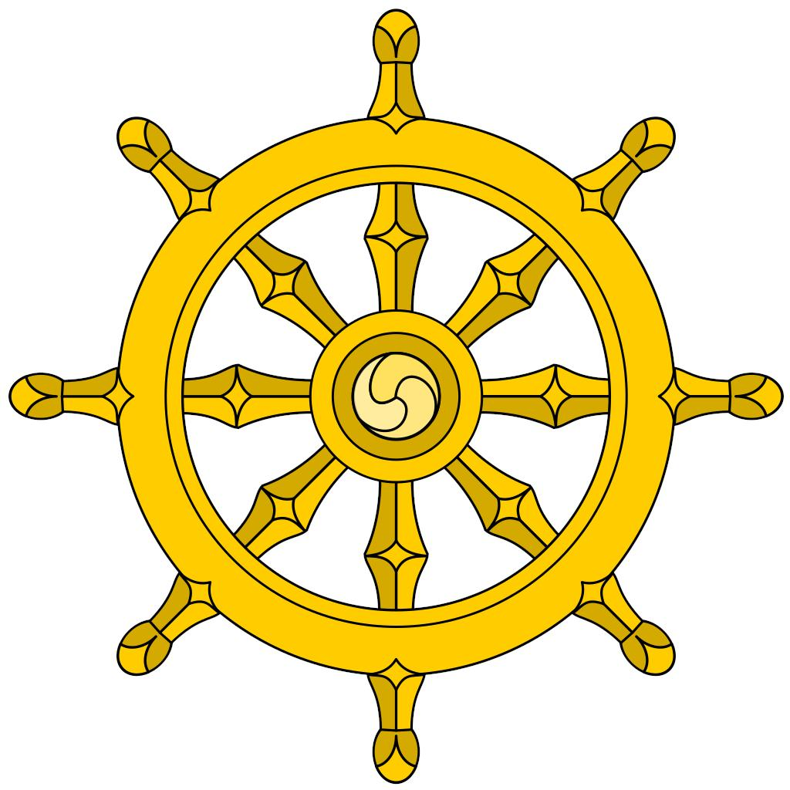
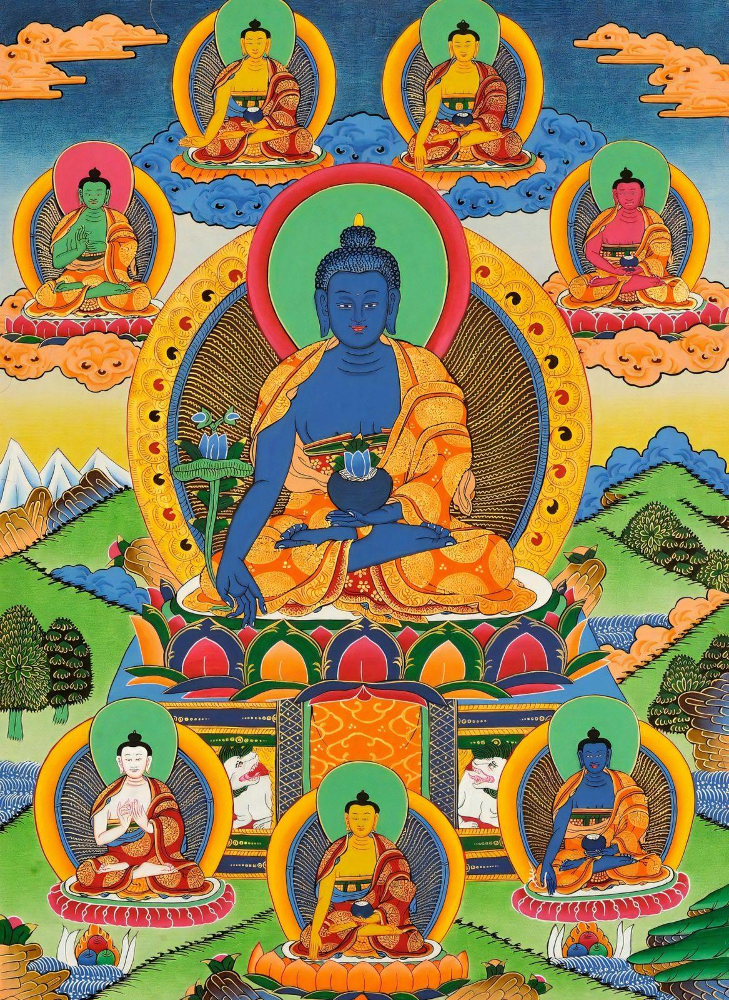
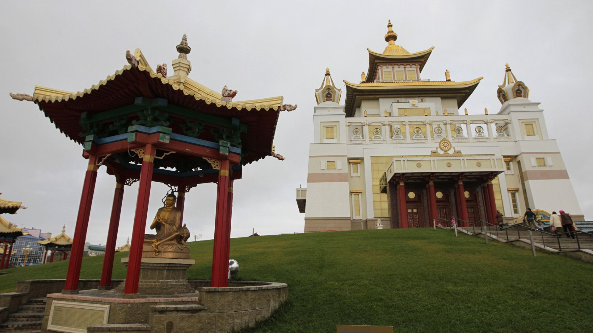

Основные термины и понятия буддизма
Дхарма – в общем смысле это буддийское учение в целом, путь буддиста. Иногда под этим термином подразумевают диктуемый учением закон, справедливость, предписываемое поведение.
Карма – закон причинно-следственной связи, согласно которому любое действие или мысль, которая имела место быть в прошлом, повлечет за собой последствие в будущем. Это значит, что благие причины порождают благие следствия и наоборот.
Меру – священная гора всех буддистов. Здесь находится центр Вселенной и потому живут высшие божества.
Праджня – божественная, высшая мудрость, признается в течении махаяны.
Махаяна – самое крупное по числу последователей направление буддийской мысли. Она также известна под названием «Великая колесница». Предполагает множество обрядов, ритуалов, имеет много сутр. Среди махаянцев много мирян, потому что для проведения обрядов, медитаций не нужно быть обязательно монахом.
Сансара – обычная человеческая жизнь, бытие, которое полно страданий, привязанностей. Круговорот сансары предполагает постоянные рождения, смерти и перерождения в новых воплощениях.
Сутра –священные тексты буддийской культуры. Иногда также называются «сутта».
Чань – то же самое, что дзен, но китайский его вариант. Монастыри боевых искусств, в их числе знаменитый Шаолинь, берут начало именно отсюда.
Шамбала – невидимая страна, которая открывается только тем, кто удостоен высшего духовного развития. Предполагается, что находится на тибетских землях. Многие исследователи и просто любопытные отправлялись на поиски Шамбалы, но тщетно.
Авалокитешвара – будда сострадания, обладающий большим весом в буддийском пантеоне. Считается символом милосердия, а в мире людей воплощается в Далай-ламе.
Будда – существо, достигшее просветления и оставшееся в нирване.
Нирвана – освобождение от привязанностей, страстей, желаний, а значит – выход из череды перерождений, из колеса сансары. Представляется главной целью буддистов, потому что предполагает постоянное блаженство.
Паринирвана – окончательная нирвана. От нирваны она отличается тем, что возможна только вместе с умиранием физической оболочки человека.
Символика будистов:

Бог в представлении буддистов:

Будиский храм:
